Primary reference: Grove IoT Starter Kits Powered by AWS , LinkIt ONE, MediaTek AWS IoT Guide
LinkIt ONE development board is an open source, high-performance development board for wearable and IoT product prototyping. It is based on MT2502 (ARM7EJ-S™ MCU) and integrates GSM, GPRS, Wi-Fi, Bluetooth BR/EDR/BLE, GPS, Audio decoder, and SD card connector on a single development board. The kit enables you to build up cloud computing connected projects that involve communications for smart cities, transportation and logistics.
You can use AWS IoT to accomplish two key tasks: secured data and flexible tele-operations. Data is a key component of any IoT device. When sending data to the cloud, over a cellular or Wi-Fi network, you need to make the telemetry is confidential, this can be overcome by different security mechanism offered by AWS. With AWS Rule Engine, you can build a complete solution with other AWS services for your project.
With MediaTek LinkIt™ ONE and Grove IoT Starter Kit Powered by AWS, you can create powerful Wearables, bleeding edge IoT devices, send your device data to Amazon Web Services. The kit includes a collection of Grove sensors for gathering data and peripherals to acquire visual interface on your device. And by adopting the AWS Cloud, your business will benefit from its flexibility, scalability and pay on-your-demand.

| Board/Part | Quantity | Documentation |
|---|---|---|
| LinkIt ONE | 1 | Read Here |
| Base Shield | 1 | Read Here |
| Grove - 3-Axis Digital Accelerometer(±16g) | 1 | Read Here |
| Grove - Light Sensor | 1 | Read Here |
| Grove - LED Bar v2.0 | 1 | Read Here |
| Grove - Moisture Sensor | 1 | Read Here |
| Grove - Touch Sensor | 1 | Read Here |
| Grove - Temperature Sensor | 1 | Read Here |
| Grove - OLED Display 1.12’’ | 1 | Read Here |
| Grove - Loudness Sensor | 1 | Read Here |
| Micro USB Cable - 48cm | 1 |
At the very beginning, we need to get an AWS IoT service account, and do some configuring.
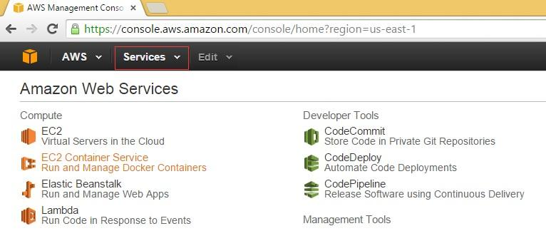

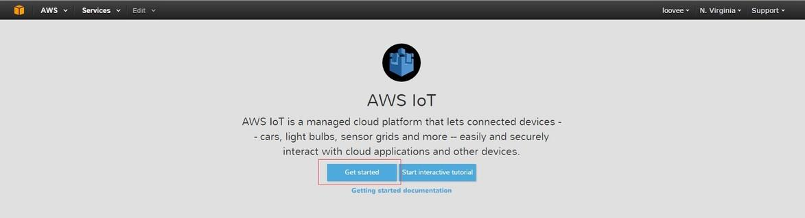
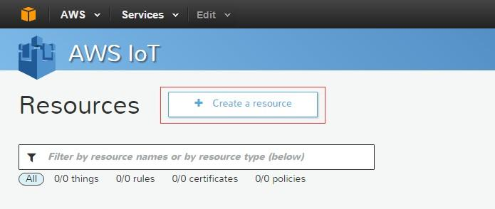

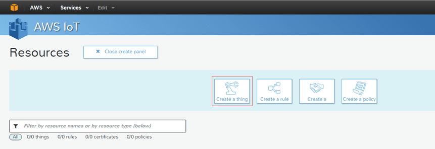
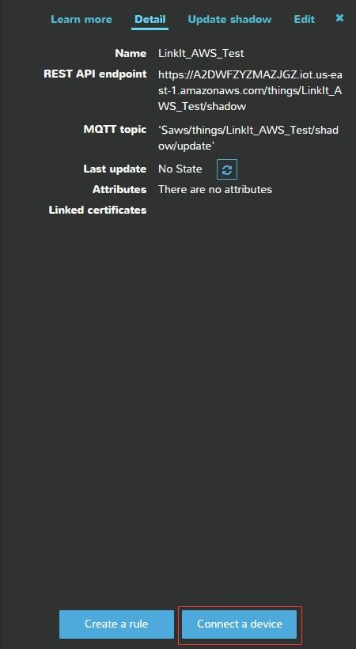
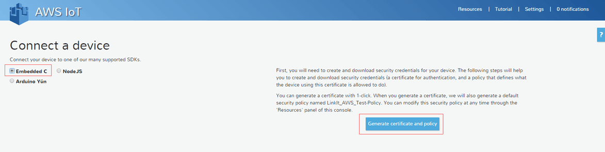
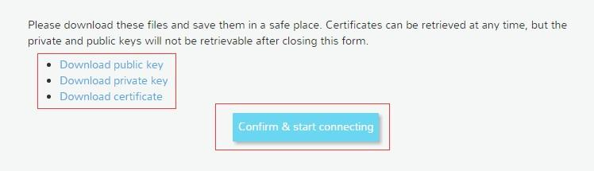
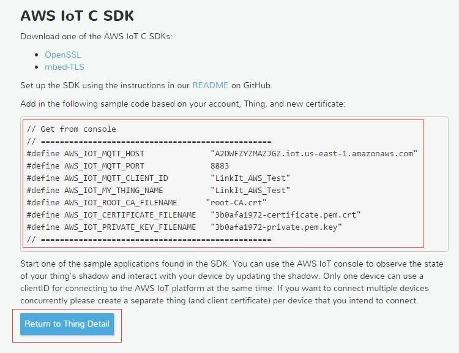
This tutorial is under Windows(Windows 7 or above) system and Arduino IDE 1.5.7 with LinkIt SDK 1.1.17.
Note: This Version support Arduino IDE 1.5.7(And Arduino IDE 1.6.5) and LinkIt SDK 1.1.17 only.
AWS IoT Services support for the LinkIt ONE development board enables secure communication between smart projects and Amazon's IoT optimized cloud. AWS IoT Services uses message broker(MQTT broker) and HTTP as its communication protocols. To support this on the LinkIt ONE development board the mbed TLS library for LinkIt ONE (a version of the mbed TLS library) is provided to offer Transport Layer Security (TLS). This library easily integrates with new and existing (embedded) applications and provides the building blocks for secure communication, cryptography, and key management.
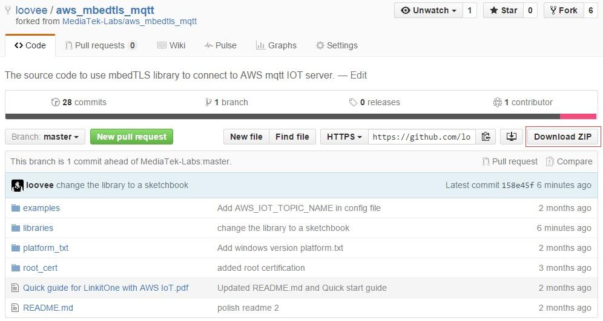
Unzip the file you had downloaded from Github, you will get a folder named aws_mbedtls_mqtt-master, remove “-master” in the file name.
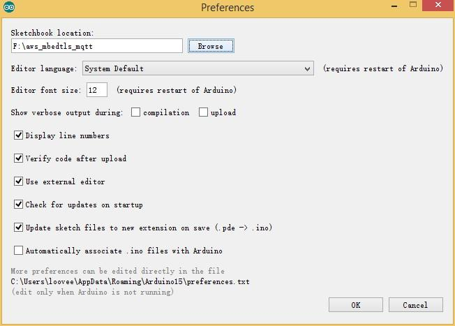
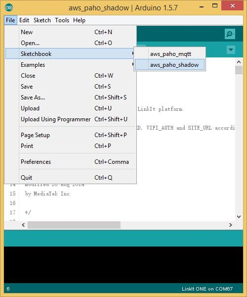
Switch it into Mass Storage mode, as shown below. You need to disconnect power if no new-plugged-driver exists on your desktop OS.
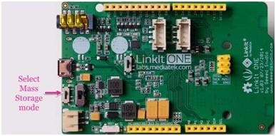
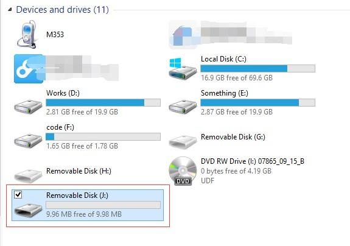
And in the code we had downloaded, there's file named VeriSign-Class 3-Public-Primary-Certification-Authority-G5 (1).pem in \aws_mbedtls_mqtt\root_cert in, copy it to the Remove Disk as well, and rename it to root-CA.crt 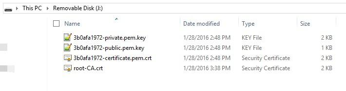
Then switch to UART mode( corner-most section of LinkIt ONE board).
Click File>Sketchbook>aws_paho_shadow to open the code.
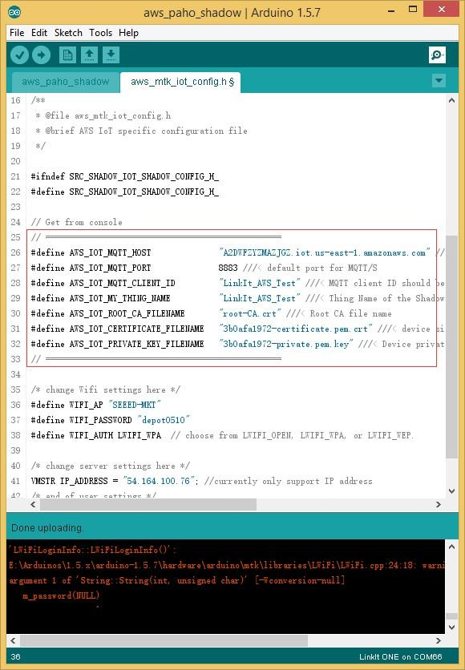
Copy the code and replace it in aws_paho_shadow.h.
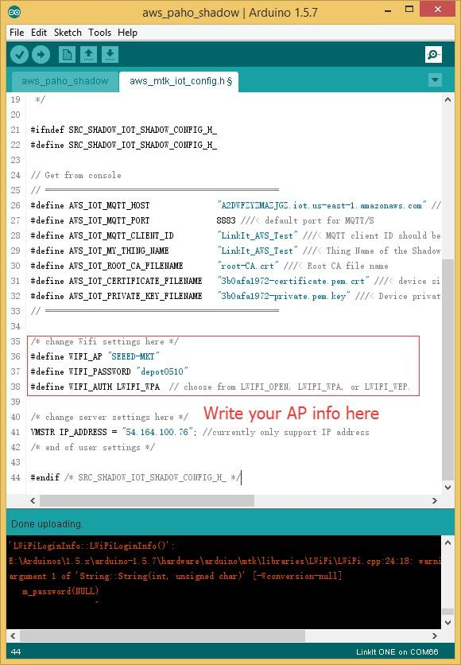
ping A2DWFZYZMAZJGZ.iot.us-east-1.amazonaws.com
Note that You need to replace the A2DWFZYZMAZJGZ.iot.us-east-1.amazonaws.com with the constant AWS_IOT_MQTT_HOST 's value, which can find in the previously copied code.
You will get:
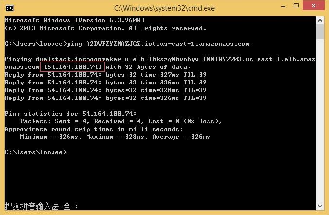
And modify IP_ADDRESS(line 40) to this line of numbers. (Here is 54.164.100.76)
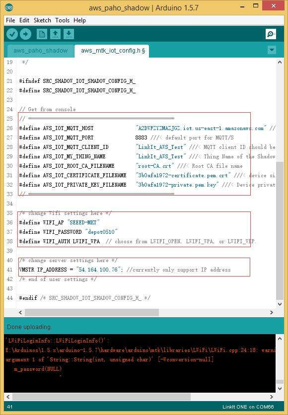
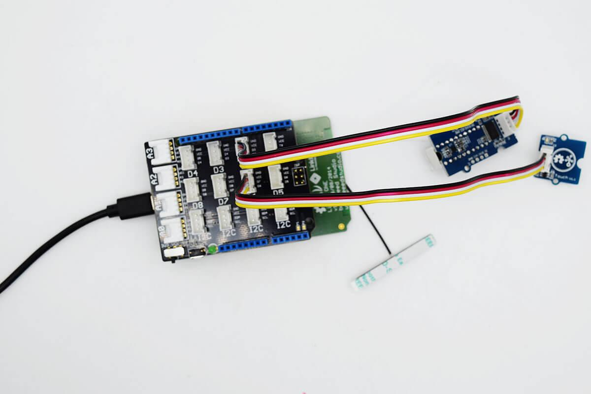
Material required:
Tip: refer to here for any library file(or header file) missing error prompted. Connect you LinkIt ONE to PC, and remember to insert the Wi-Fi antenna first. Open your Device Manage, you will find there are 2 COM Ports:
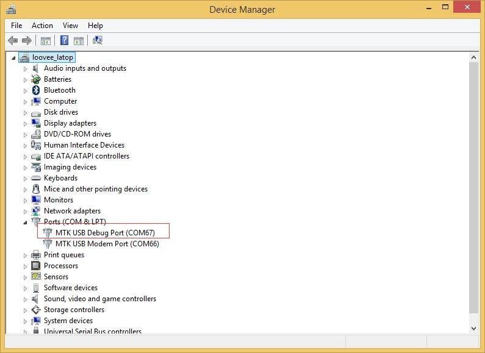
Click Tools>Board and choose LinkIt ONE. Click Tool>Ports and choost the number of MTK USB Debug Port. Finally, click Upload button to Upload the code.
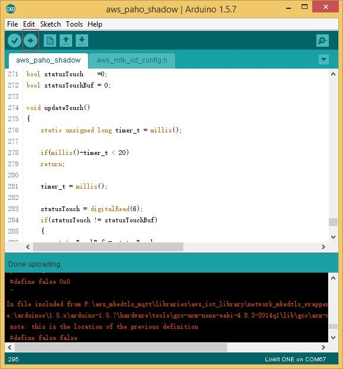
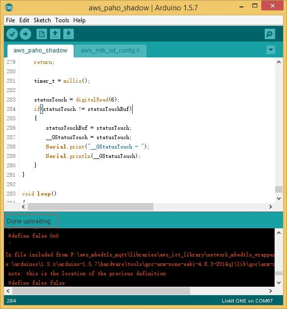
Note that you have to set antenna connected. Refer to here.
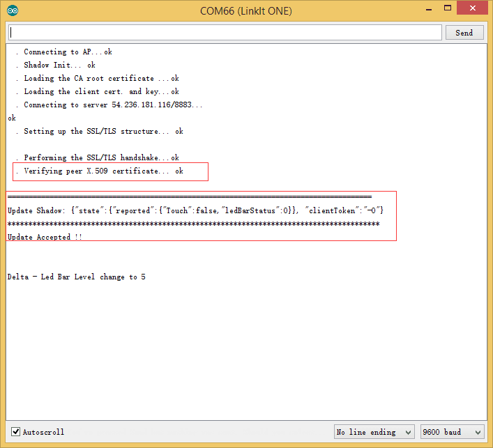
Then let's open AWS IoT website, sign in to your account. And click the thing you created minutes ago:
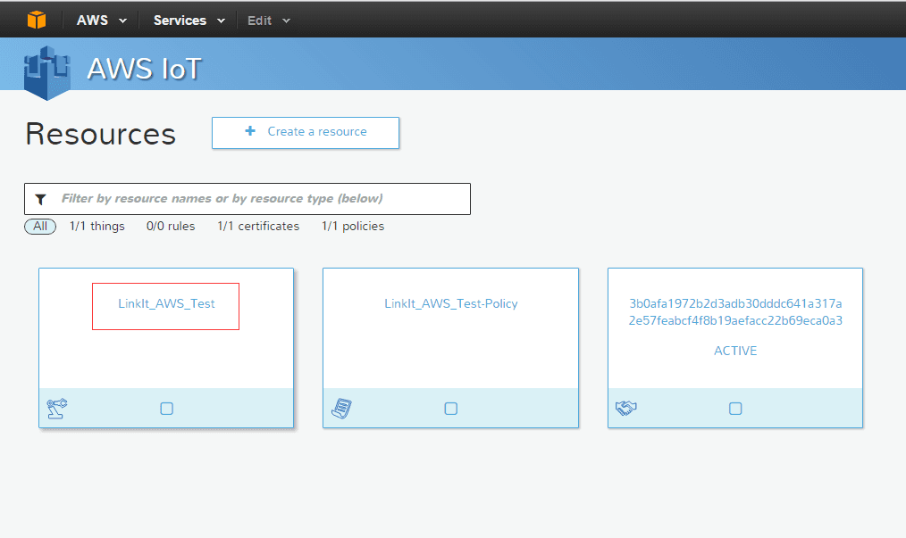
You will find a control panel on the right side.
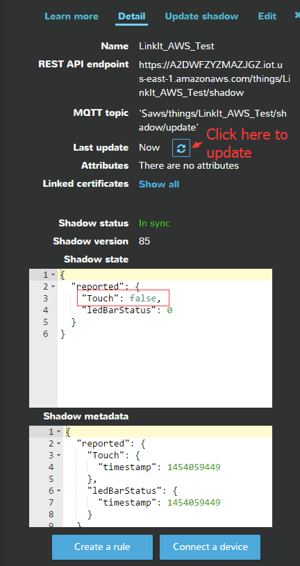
You can check the status of Touch Sensor now. Try press the Touch Sensor, and update it.
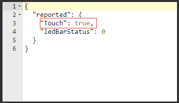
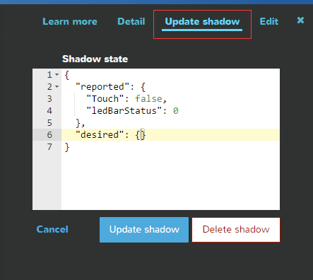
{ "desired": { "ledBarStatus": 5 }, "reported": { "Touch": false, "ledBarStatus": 0 } }
Copyright (c) 2008-2016 Seeed Development Limited (www.seeedstudio.com / www.seeed.cc)